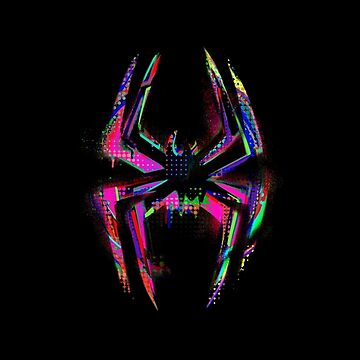

Nos événements passés


Découvrez ici quelques exemples de nos visuels. Faites défiler les images à l’aide des boutons pour parcourir la galerie et visualiser différents rendus. Chaque image illustre une partie de notre travail et vous permet d’avoir un aperçu clair du résultat final.
Nos projets en cours
Nos projets en cours représentent le cœur de
notre travail actuel. Nous y consacrons toute notre
énergie afin de développer des idées innovantes et de
proposer des solutions toujours plus adaptées. Chaque
projet suit un processus précis : réflexion, conception,
test puis amélioration continue. Cela nous permet de
garantir un résultat final cohérent, fonctionnel et aligné
avec nos objectifs.
Nous travaillons actuellement sur plusieurs axes, allant
de la création visuelle à l’optimisation d’outils
numériques, en passant par le développement de nouvelles
fonctionnalités. Cette section vous offre un aperçu
transparent de nos avancées, afin que vous puissiez suivre
l’évolution de nos travaux et mieux comprendre la vision
qui les guide.